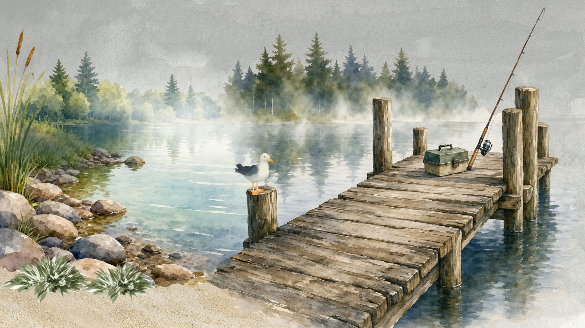
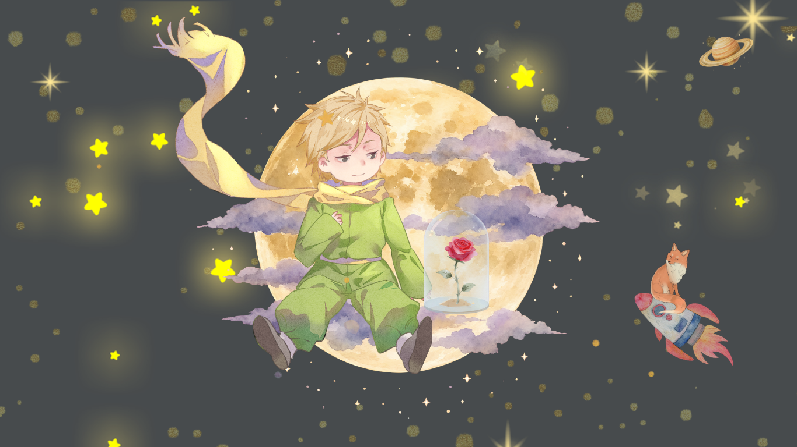
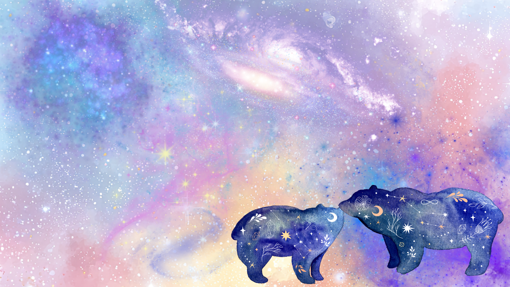
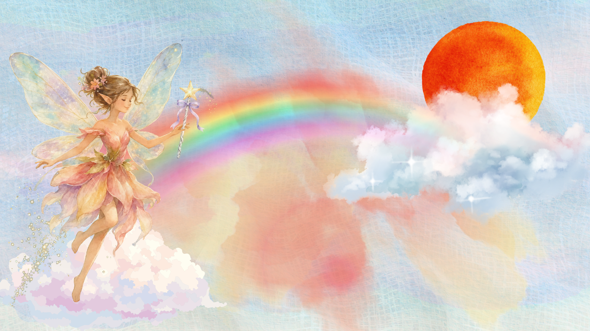
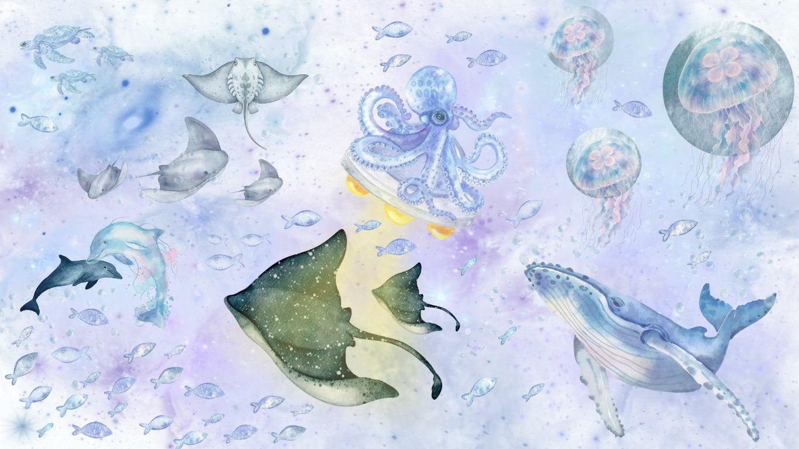

The Gallery
A small exhibition of my watercolor worlds: quiet lakes, starry skies, fairies and dreamy seas.





A small exhibition of my watercolor worlds: quiet lakes, starry skies, fairies and dreamy seas.




